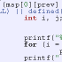

|  | Projects |
|
This page is old and unmaintained, preserved as a historical curiosity. Please visit my current page.
... this will grow as I get more time to work on it ...
My number one concern at the moment is to handle the thousands of media files (pictures, music) that fill my hard disk. I've moved completely away from media that one can organize physically: printed photos, CDs (all are ripped on purchase and stuck on a shelf at home. This is because I move between home, school, and work many times a year -- physical media are too bulky to take along.
Modern file systems (I know, Microsoft & Hans Reiser have their solutions to the problem, but they are both kernel-level, and far from practical readiness) can't handle metadata well. For instance, a file name is no way to name a piece of media -- I wish titles (and all other textual information) to have the option of being multilingual. I wish to have a standard, easy way of changing metadata regardless of media type or encoding. I wish to be able to get many different views of my media (all pictures having to do with the ocean, or all music featuring violins). Forget for the moment the problem of entering all this metadata (not that bad, if the UI is efficiently designed). Even if I had complete information (I have a lot already), I need a fast way of organizing the metadata, and viewing the media based on metadata. This is my project.
The goal (a prototype version is my photo gallery, which'll go up again next semester) is to have a sophisticated metadata handling back-end that's can easily supply web-based views, as well as command-line and native GUI accessors. The spec isn't in a shape for other eyes to see, but when I have time to devote to the project, it may go up on this page.
My second project is to complete my sound localization library, and mess around with the various cool applications it has. More on that here.
Both projects are on hold pending completion of grad school applications and substantial completion of my senior thesis.
My computer runs Gentoo Linux, almost completely using open-source software. I have two main reasons for this set-up:
At the same time, I have no qualms (and, indeed, have enjoyed) about working for commercial software companies (Microsoft, VMware). I understand that many people and companies depend on well-packaged, supported, and polished software that "works" (for the most part). The software industry also produces a very substantial amount of innovative technology. The trend I see, however, is that open-source software has also begun to contribute increasingly to innovation, and that the polish and quality of free software has been getting better at an amazing rate. No doubt, the commercial software industry is here to stay (without it, free software would lead, at best, a tenuous existence), but business models and outlooks may have to change in the years to come.
Regardless of what the future holds, I currently rely on open-source software, and so find it not only appropriate (as thanks), but also in my own self-interest to contribute. I file bug reports (not that many are needed, thankfully), and have undertaken to make some enhancements myself. Three of my patches are still waiting to make it to released versions of software, so I make them available here:
There's a lot that went on since the days of my old web page. However, most of it is not fit for public consumption. In case you need a consultation on the following topics, I should have a few things to say: Lin-Kernighan approximations to the traveling salesperson problem (and beyond), probabilistic analogy solving, memory profiling, subtitling video on Linux (there is an excellent text that you should read before writing to me), digital sound & image manipulation.
|
Last updated November 14, 2003. This page is viewable with any browser. Valid XHTML 1.0, Valid CSS2. The entire site is © Alexey Spiridonov, 2003. It is licensed under the Creative Commons: Attribution-NoDerivs-NonCommercial license; the license applies to the website as one entity. |